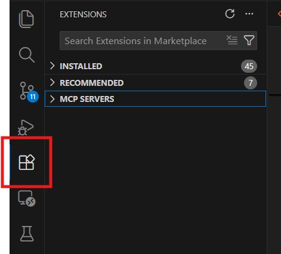
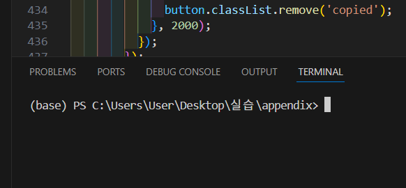
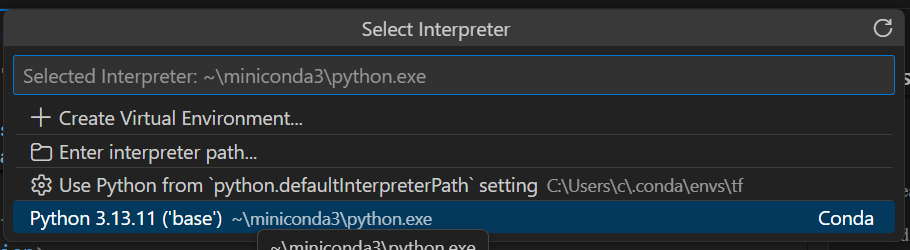
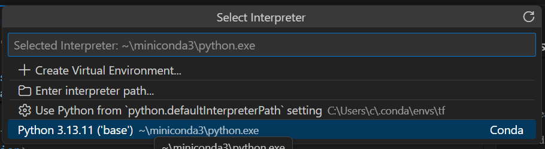

강의 부록:
비전공자를 위한 환경 설정 가이드
현업 수준의 파이썬 개발 환경 구축 A to Z
본 자료는 입문자가 실무 환경을 완벽히 준비할 수 있도록
단계별 상세 지침을 제공합니다.
1. 코드 에디터: VS Code 설치
프로그래밍을 시작하기 위해 전 세계에서 가장 널리 쓰이는 도구인 Visual Studio Code를 설치합니다.
- 웹 브라우저(크롬, 엣지 등)를 엽니다.
- 주소창에 code.visualstudio.com을 입력하고 접속합니다.
- 페이지 중앙에 있는 파란색 'Download for Windows' 버튼을 클릭합니다.
- 다운로드가 시작되며, 브라우저 하단이나 다운로드 폴더에
VSCodeUserSetup-x64-x.xx.x.exe파일이 저장됩니다. - 다운로드가 완료되면 (보통 1-2분 소요) 파일을 클릭하여 실행합니다.
- 사용권 계약: '동의합니다'를 선택하고 [다음] 클릭
- 설치 위치 선택: 기본 경로 그대로 두고 [다음] 클릭
- 시작 메뉴 폴더: 기본값 그대로 [다음] 클릭
이 단계가 가장 중요합니다! 다음 항목들을 모두 체크해주세요:
- ☑ 바탕 화면에 아이콘 만들기 (선택사항, 편의를 위해 권장)
- ☑ PATH에 추가(다시 시작한 후 사용 가능) ← 필수!
- ☑ 탐색기 파일의 상황에 맞는 메뉴에 "Code(으)로 열기" 작업 추가 ← 필수!
- ☑ 탐색기 디렉터리의 상황에 맞는 메뉉 "Code(으)로 열기" 작업 추가 ← 필수!
- ☑ 지원되는 파일 형식의 편집기로 Code 등록 (선택사항)
모두 체크했다면 [다음] → [설치] 버튼을 차례로 클릭합니다.
※ 설치는 보통 1-2분 정도 소요됩니다.
2. 사용자 친화적인 환경 설정
에디터를 처음 실행하면 영어로 되어 있어 생소할 수 있습니다. 한글화와 편리한 기능을 설정합니다.
- 바탕화면의 VS Code 아이콘을 더블클릭하거나 시작 메뉴에서 'Visual Studio Code'를 검색하여 실행합니다.
- 처음 실행하면 영어로 된 화면이 나타납니다. 당황하지 마세요!
- 화면 왼쪽 세로 메뉴바(사이드바)를 보면 5-6개의 아이콘이 있습니다.
- 그 중 네모 블록 4개가 모여있는 모양의 아이콘(Extensions)을 클릭합니다. 
- 상단에
Search Extensions in Marketplace라는 검색창이 나타납니다. - 검색창을 클릭하고
Korean이라고 입력합니다. - 검색 결과 맨 위에 'Korean Language Pack for Visual Studio Code'가 나타납니다.
- 제작자가 Microsoft인지 확인하고, 파란색 [Install] 버튼을 클릭합니다.
- 설치가 완료되면 (보통 5-10초) 우측 하단에 팝업 알림이 나타납니다.
- 팝업에서 [Change Language and Restart] (또는 [Restart]) 버튼을 클릭합니다.
- VS Code가 재시작되면서 모든 메뉴가 한글로 변경됩니다! ✨
※ 만약 팝업이 안 보인다면: 상단 메뉴 View → Command Palette (Ctrl+Shift+P) → "Configure Display Language" 입력 → "한국어" 선택
3. 필수 확장 프로그램(Extensions) 설치
VS Code는 다양한 플러그인을 통해 기능을 확장합니다. 파이썬 개발에 반드시 필요한 확장을 설치합니다.
- 왼쪽 사이드바의 확장(Extensions) 아이콘을 다시 클릭합니다.
- 검색창에
Python을 입력합니다. - 맨 위에 나오는 'Python' (제작: Microsoft, 노란 뱀 아이콘)을 찾습니다.
- 파란색 [설치] (또는 [Install]) 버튼을 클릭합니다.
- 설치가 완료될 때까지 기다립니다. (보통 10-20초 소요)
- 버튼이 [제거]로 바뀌면 설치 완료! ✓
AI가 코드를 자동 완성해주는 강력한 도구입니다. 유료이지만 학생은 무료!
- 검색창에
GitHub Copilot을 입력합니다. - 'GitHub Copilot' (제작: GitHub)를 찾아 [설치] 클릭합니다.
- 설치 후 GitHub 계정 로그인이 필요합니다. (학생 인증 필요)
※ Copilot은 선택사항입니다. 나중에 설치해도 됩니다.

4-1. 패키지 관리자: Miniconda (Windows)
프로젝트별로 독립된 실험실(가상환경)을 만들기 위해 Miniconda를 사용합니다.
- 다음 링크를 클릭: Miniconda3 최신 버전 다운로드
- 다운로드가 시작됩니다. (파일 크기: 약 100MB, 1-2분 소요)
- 다운로드 폴더에
Miniconda3-latest-Windows-x86_64.exe파일이 저장됩니다. - 다운로드 완료 후 파일을 더블클릭하여 실행합니다.
- Welcome 화면: [Next] 클릭
- License Agreement: [I Agree] 클릭
- Select Installation Type: "Just Me" 선택 후 [Next]
- Choose Install Location: 기본 경로 그대로 두고 [Next]
이 화면에서 반드시 다음과 같이 설정하세요:
- ☑ "Add Miniconda3 to my PATH environment variable" ← 반드시 체크!
- ☑ "Register Miniconda3 as my default Python" (이것도 체크 권장)
※ 빨간 경고 문구가 나와도 무시하고 체크하세요! 이게 가장 편합니다.
- 두 항목 모두 체크했다면 [Install] 클릭
- 설치 진행 (2-3분 소요)
- 완료 화면에서 [Next] → [Finish] 클릭
4-1-1. PowerShell 실행 정책 설정 (Windows 필수)
Conda가 정상적으로 작동하려면 PowerShell의 실행 정책을 변경해야 합니다.
- 키보드에서 Windows 키를 누릅니다. (또는 화면 왼쪽 하단 시작 버튼 클릭)
- 검색창에
PowerShell이라고 입력합니다. - 검색 결과에 'Windows PowerShell'이 나타납니다.
- 이것을 마우스 우클릭합니다.
- 메뉴에서 '관리자 권한으로 실행'을 클릭합니다.
- "이 앱이 디바이스를 변경하도록 허용하시겠습니까?" 메시지가 나오면 [예] 클릭
- 파란색 배경의 PowerShell 창이 열립니다. 제목 표시줄에 "관리자:"라고 써있는지 확인하세요!
관리자 권한 PowerShell 창에서 다음 명령어를 정확히 입력합니다.
Set-ExecutionPolicy RemoteSigned- 위 명령어를 복사하여 PowerShell 창에 붙여넣기 (우클릭 또는 Ctrl+V)
- Enter 키를 누릅니다.
- 다음과 같은 확인 메시지가 나타납니다:
실행 정책 변경 실행 정책을 사용하여 신뢰할 수 없는 스크립트를 차단할 수 있습니다. 실행 정책을 변경하면 about_Execution_Policies 도움말 항목에 설명된 대로 보안 위험에 노출될 수 있습니다. 실행 정책을 변경하시겠습니까? [Y] 예(Y) [A] 모두 예(A) [N] 아니요(N) [L] 모두 아니요(L) [S] 일시 중단(S) [?] 도움말
Y를 입력하고 Enter를 누릅니다.- 아무 메시지 없이 다시 명령 프롬프트(PS C:\...)가 나타나면 성공입니다! ✓
PowerShell에서 Conda를 사용할 수 있도록 초기화합니다.
conda init powershell- 위 명령어를 PowerShell에 입력하고 Enter를 누릅니다.
- 다음과 같은 메시지가 주르륵 나타납니다:
no change C:\Users\사용자이름\miniconda3\Scripts\conda.exe no change C:\Users\사용자이름\miniconda3\Scripts\conda-env.exe ... modified C:\Users\사용자이름\Documents\WindowsPowerShell\profile.ps1 For changes to take effect, close and re-open your current shell.
- 마지막에 "For changes to take effect, close and re-open your current shell."이라고 나오면 성공!
- PowerShell 창을 완전히 닫습니다. (X 버튼 클릭)
- VS Code도 완전히 종료합니다. (VS Code 창의 X 버튼 클릭)
- 잠시 후 VS Code를 다시 실행합니다.
※ 반드시 재시작해야 conda 명령어가 작동합니다!
4-2. 패키지 관리자: Miniconda (macOS)
Apple Mac 사용자는 하드웨어 사양에 맞는 버전을 선택하여 설치하셔야 합니다.
화면 왼쪽 위 [애플 로고] > [이 Mac에 관하여]에서 프로세서 종류를 먼저 확인하십시오.
- Apple M1/M2/M3 칩 (Apple Silicon):
arm64 (.pkg) 버전 다운로드 - Intel 칩:
x86_64 (.pkg) 버전 다운로드
macOS 보안 설정으로 인해 설치가 차단될 경우, 다운로드한 파일을 우클릭한 후 '열기'(또는 '설치 프로그램' 관련 기본 메뉴)를 선택하여 강제 실행해 주십시오.
터미널 앱을 열고 conda --version을 입력하여 버전 정보가 나오면 성공입니다.
5. 가상환경 구축 및 관리
여러 프로젝트를 동시에 진행할 때, 라이브러리 간 충돌을 방지하기 위해 독립된 환경을 만듭니다.
- VS Code를 실행합니다.
- 상단 메뉴에서 터미널(Terminal) → 새 터미널(New Terminal) 클릭
- 또는 단축키
Ctrl + `(백틱, 1번 키 왼쪽)을 누릅니다. - 화면 하단에 터미널 창이 나타납니다.
- 터미널에 (base)라는 글자가 보이면 conda가 정상 작동하는 것입니다! ✓
터미널 열기

(base) 확인
이제 우리만의 독립된 파이썬 환경을 만들어봅시다.
conda create -n my_env python=3.11 -y- 위 명령어를 터미널에 복사-붙여넣기 하고 Enter를 누릅니다.
-n my_env: 환경 이름을 'my_env'로 지정python=3.11: Python 3.11 버전 설치 (최신 안정 버전)-y: 모든 확인 질문에 자동으로 'yes' 응답- 환경 생성이 시작되며 패키지를 다운로드합니다. (1-2분 소요)
- 마지막에 다음 메시지가 나오면 성공:
# # To activate this environment, use # # $ conda activate my_env # # To deactivate an active environment, use # # $ conda deactivate
생성한 환경에 "입장"해야 사용할 수 있습니다.
conda activate my_env- 위 명령어를 입력하고 Enter를 누릅니다.
- 터미널의 맨 앞 부분이
(base)에서(my_env)로 바뀝니다!
(base) PS C:\Users\사용자이름> conda activate my_env
(my_env) PS C:\Users\사용자이름>
이제 my_env 환경이 활성화되었습니다! 앞으로 설치하는 모든 패키지는 이 환경에만 설치됩니다.
Python이 제대로 설치되었는지 확인해봅시다:
python --version결과: Python 3.11.x와 같은 메시지가 나오면 성공! ✓
➕ 추가 패키지 설치 (선택사항 - 클릭하여 펼치기)
데이터 분석과 시각화에 필요한 주요 라이브러리들을 미리 설치할 수 있습니다.
# 데이터 분석 패키지 일괄 설치 (1-2분 소요)
pip install pandas numpy matplotlib seaborn scikit-learn
# 설치된 패키지 목록 확인
pip list
# 가상환경 목록 확인
conda env list※ 이 단계는 지금 하지 않아도 나중에 필요할 때 설치할 수 있습니다.
6. VS Code 인터프리터 연결
에디터가 내가 만든 가상환경을 사용하도록 직접 지정해 주어야 합니다.
- VS Code에서 새 파일을 만듭니다. (Ctrl+N)
- 파일을 Python 파일로 저장합니다. (Ctrl+S → 파일명:
test.py) - 키보드로
Ctrl + Shift + P를 동시에 누릅니다. - 화면 상단 중앙에 검색창이 나타납니다.
- 검색창에
Python: Select Interpreter를 입력합니다. - 자동완성 목록이 나타나면 'Python: Select Interpreter'를 클릭하거나 Enter를 누릅니다.
 

- Python 인터프리터 목록이 나타납니다.
- 목록에서 'my_env'가 포함된 항목을 찾습니다:
Python 3.11.x ('my_env')
~\miniconda3\envs\my_env\python.exe
- 위와 같이 'my_env'가 적힌 항목을 클릭하여 선택합니다.
- 만약 목록에 my_env가 안 보인다면:
- 터미널에서
conda activate my_env를 먼저 실행 - VS Code를 완전히 재시작
- 다시 인터프리터 선택 시도
- 터미널에서
선택이 완료되면 VS Code 화면 우측 하단 상태 표시줄을 확인하세요.
- 파란색 바에 '3.11.x ('my_env')' 또는 'my_env'라고 표시되어야 합니다.
- 이제 .py 파일을 실행하면 자동으로 my_env 환경의 Python을 사용합니다! ✓
※ 사진은 예시이며, 여러분은 'my_env'로 표시되어야 합니다.
환경 구축을 축하드립니다!
이제 효율적이고 전문적인 개발을 위한 모든 준비가 끝났습니다.
실제 강의 예제로 돌아가서 코딩을 시작해 보세요.